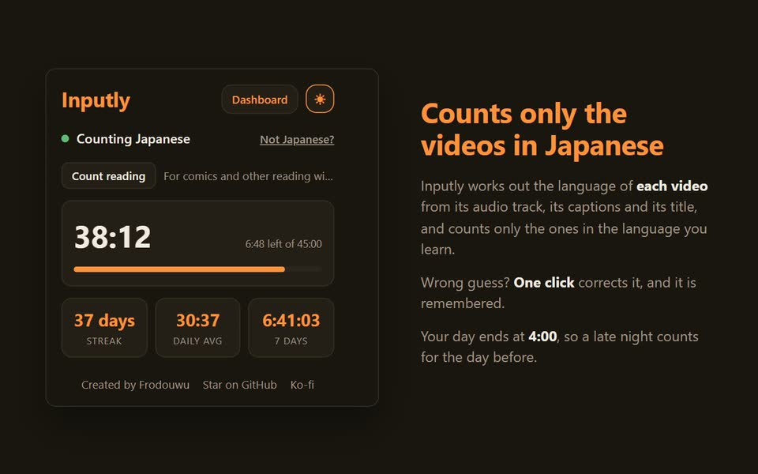
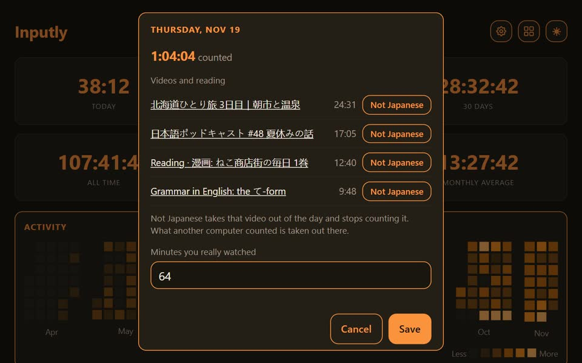
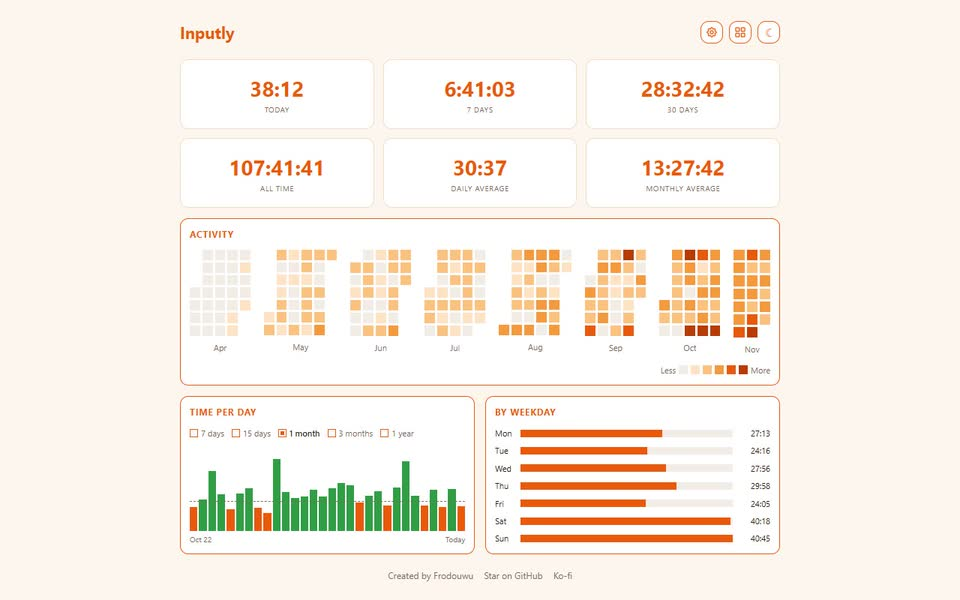
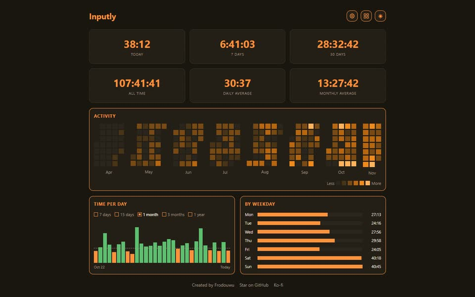
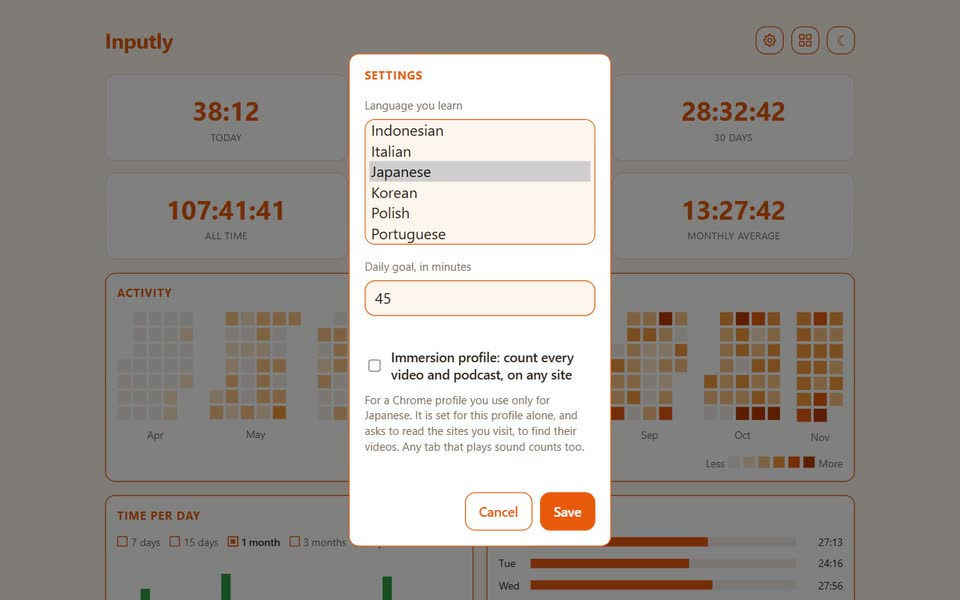

What makes Inputly different
-
It decides the language of each video
No account or profile kept only for the language: Inputly looks at the audio track that plays, the automatic captions YouTube makes from the speech or, when there are none, the title and description, on your computer. Videos in other languages are not counted.
-
One click corrects it
When it gets a video wrong, a button in the popup marks it as in your language, or as not, and the choice is remembered. Open a day to see the videos that made it up, take one out, or correct the minutes.
-
Your day ends at 4:00
Not at midnight: an episode watched late at night counts for that day.
-
Any site, any sound, if you want
Turn on the immersion profile in a browser profile you use only for the language you learn: every video that plays with sound counts, on any site, and so does a podcast. It is off by default.
-
Reading counts too
A button in the popup counts a comic, a book or an article until you stop it, or until you leave the computer for 15 minutes.
-
Honest seconds
It counts the real seconds a video plays. Pausing, rewinding and looping are handled, at 2x a minute is still a minute, and two tabs playing at once count once.
What you see
A daily goal, what is left today, your streak, and a dashboard with totals, an activity heatmap, your time per day and your average for each weekday. Light and dark mode.





Private, with no account
Everything stays in your browser. No sign-up, no ads, no analytics, no trackers, and nothing is sent anywhere unless you turn on the optional link to Mosaik, an app of your own. This page loads nothing from other sites either. Read the privacy policy.
Open source
The code is on GitHub under the MIT license. Ideas and bugs go to the issues. If Inputly is useful to you, give it a star or support it on Ko-fi.